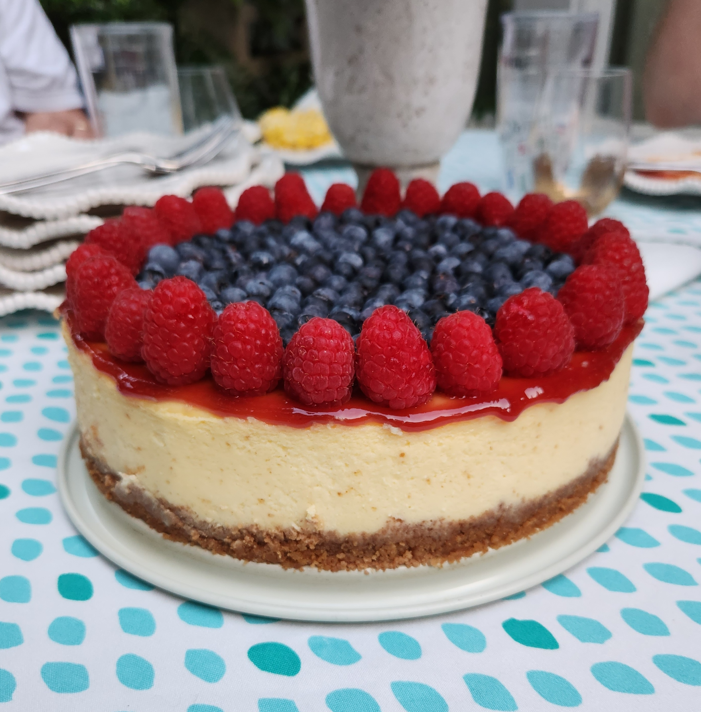

Home
Classic New York Cheesecake

Description
I found this recipe on Google while looking for an easy cheesecake recipe to try and everyone I have made this for loves it. This recipe comes from
Once Upon a Chef and is the best cheesecake I've had.
Here's the link to the original recipe:
Classic New York Cheesecake
Ingredients
Crust
- 1 1/2 cups graham cracker crumbs, from 12 whole crackers
- 5 tablespoons unsalted butter, melted
- 2 tablespoons sugar
- 1/8 teaspoon salt
Filling
- 32 oz (four 8-oz blocks) cream cheese, at room temperature
- 2 cups sugar
- 3 tablespoons all-purpose flour
- 4 teaspoons vanilla extract
- 1 teaspoon packed lemon zest, from 1 lemon
- 2 teaspoons fresh lemon juice, from 1 lemon
- 1/4 teaspoon salt
- 6 large eggs
- 1/2 cup sour cream
Toppings
- Seedless raspberry jam (optional)
- Berries of your choice (optional)
Preparation
Before you begin, make sure you use a springform pan and 18-inch heavy duty foil for this.
If you do not use 18-inch foil, you risk water getting through the springform pan and seeping into the crust.
- Preheat the oven to 375°F and set an oven rack in the lower middle position.
- Wrap a 9- or 10-inch springform pan with one large piece of heavy-duty aluminum foil, covering the underside and
extending all the way to the top so there are no seams on the bottom or sides of the pan. Repeat with another sheet of foil for insurance.
- Spray the inside of the pan with nonstick cooking spray.
- In a medium bowl, combine the graham cracker crumbs, melted butter, sugar, and salt. Stir until well combined.
- Press the crumbs into an even layer on the the bottom of the prepared pan.
- Bake the crust for 10 minutes, until set. Remove the pan from the oven and set aside.
- Reduce the oven temperature to 325°F. Set a kettle of water to boil.
- In the bowl of an electric mixer fitted with the paddle attachment or beaters, beat the cream cheese, sugar, and flour together on medium
speed until just smooth, about 1 minute. Scrape the bottom and sides of the bowl to be sure the mixture is evenly combined.
- Add the vanilla, lemon zest, lemon juice, and salt; beat on low speed until just combined.
- Add the eggs, one at a time, mixing on low speed until incorporated, scraping the bowl as necessary.
- Mix in the sour cream. Make sure the batter is uniform but do not over-mix.
- Check to make sure your oven has cooled to 325°F, then set the cheesecake pan in a large roasting pan.
- Pour the batter on top of the crust.
- Pour the boiling water into the large roasting pan to come about 1 inch up the side of the cake pan.
- Bake until the cake is just set, 1 hour and 30 minutes to 1 hour and 45 minutes. (If the cheesecake starts to look too golden on top
towards the end, cover it loosely with foil.) The cake should not look liquidy at all but will wobble just a bit when the pan is nudged;
it will continue to cook as it cools.
- Carefully remove the roasting pan from the oven and set it on a wire rack. Cool the cheesecake in the water bath until the water is just warm,
about 45 minutes.
- Remove the springform pan from the water bath and discard the foil. If necessary, run a thin-bladed knife around the edge of the cake to make
sure it's not sticking to the sides (which can cause cracks as it cools)
- Cover with plastic wrap and transfer to the refrigerator to cool for at least 8 hours or overnight.
- After the cheesecake has cooled long enough, remove the sides of the springform pan and add your toppings.